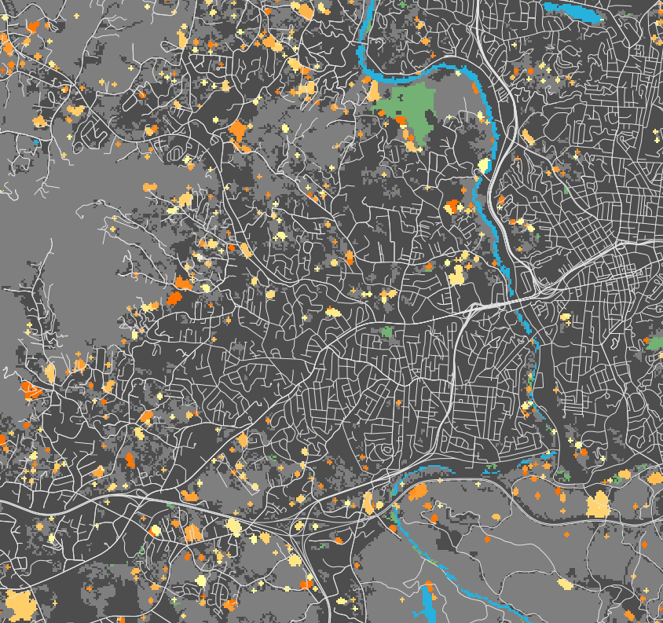
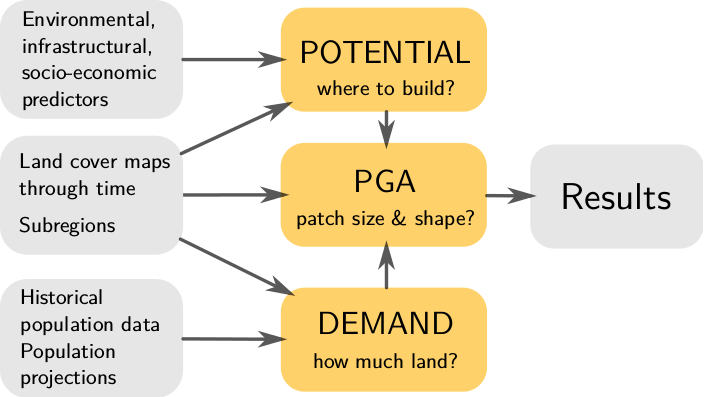
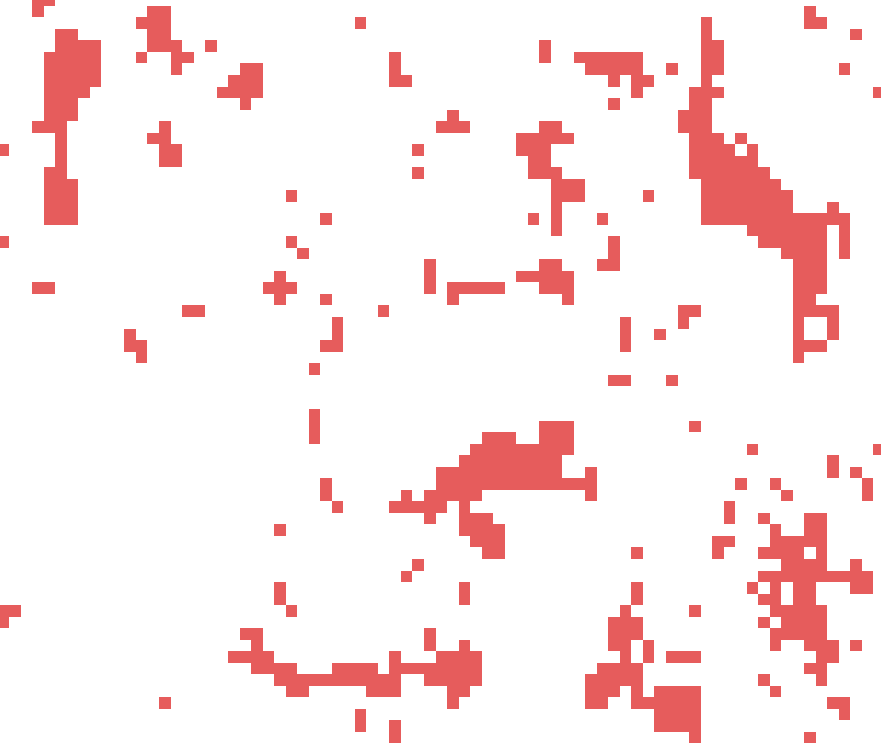
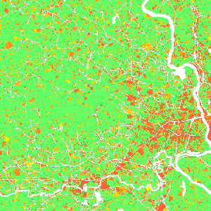
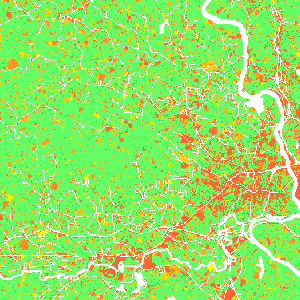
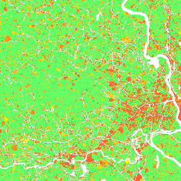

accounts for location, quantity, and pattern of change
positive feedbacks (new development attracts more development)
allows spatial non-stationarity

FUTURES, A Simplified View
turning green cells into orange cells
-1: undeveloped, 0: initial development, 1: developed in the first year, …
Modeling framework

Demand submodel
estimates the rate of per capita land consumption for
each subregion
extrapolates between historical changes in population and land conversion
inputs are historical landuse, population data, population projection
Demand scenarios
$$
y = Ae^{BX} \\
y = A + Bx \\
y = A + B ln(x) \\
y = A + B ln(x - C) \\
y = (1 - e^{-A(x - B)}) + C
$$
Demand: population decline
demand submodel designed for regions with population growth
FUTURES doesn't simulate cell de-conversion: here it would simulate zero new cell conversions
even with population decline, impervious areas can increase
Potential submodel
multilevel logistic regression for development suitability
accounts for variation among subregions (for example policies
in different counties)
inputs are uncorrelated predictors (distance to roads and development, slope, ...)
surface: potential, orange: developed areas, green: undeveloped areas
Potential submodel
$$
p_i = \frac{e^{s_i}}{1 + e^{s_i}}
$$
$p_i$ is development probability for cell i,
$s_i$ is development potential for cell i
$$
s_i = a_{j,i} + \sum_{h=1}^{n} \beta_{j, i, h} \, x_{i, h}
$$
$j$ is the level (e.g. counties),
$h$ is a predictor,
$n$ is the number of predictor variables,
$a_{j,i}$ is intercept,
$\beta_{j, i, h}$ is regression coefficient,
$x_{ih}$ is the value of h at i
Potential submodel: workflow
stratified random sampling of predictors and response variable (developed/undeveloped raster)
create probability surface from regression coefficients
Potential submodel: notes
predictors and coefficients do not change during simulation (except for development pressure)
avoid multicollinearity
Development pressure
Predictor based on number of neighboring developed cells within search distance, weighted by distance.
Allows for a feedback between predicted change and change in subsequent steps.
$$pressure = \sum^{n_i}_{k=1} \frac{state_k} {d^{\gamma}_{ik}}$$
where $state_k$ indicates whether $k$th neighboring cell is 1 or 0 (developed or undeveloped)
$d_{ik}$ is distance between current cell $i$ and neighboring cell $k$
and $\gamma$ controls the influence of distance between neighboring cells
Development pressure
Patch Growing Algorithm
stochastic algorithm
converts land in discrete patches
inputs are patch characteristics (distribution of patch sizes and compactness)
derived from historical data
Patch Growing Algorithm
pick randomly a seed cell $i$
seed is established if $p_i$ > random number
randomly pick patch size
grow patch
add neighbors to a list and sort it based on $p_i / d^c$, where $d$ is distance from $i$ and $c$ is compactness value
pick first neighboring cell and try to add it to the patch if $p_i$ > random number
if added, add surrounding neighboring cells to the list
repeat until the patch size is met
recompute development pressure
Patch Compactness
Low

High
Scenarios: Incentive power

Scenarios
Constraint parameter: zones with decreased probability of development
$$P_{new} = P . C, \quad C \in \langle 0, 1\rangle $$
Stimulus parameter: zones with increased probability of development
$$P_{new} = P + S - P.S, \quad S \in \langle 0, 1 \rangle$$
r.futures
Information flow diagram for the set of modules implementing FUTURES
Additionally, r.futures.parallelpga can be used instead of r.futures.pga.


 
